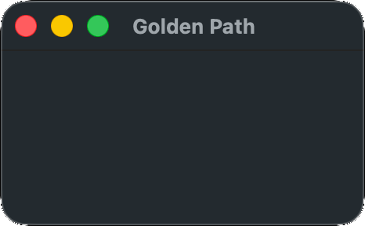

!Objective-C! Yes, we're using Obj-C. I'm not happy about it, but it's the practical choice. While it is possible to access MacOS's APIs in C, you just have to write a ton of boilerplate to call the same functions.
Copy the above code into a file and name in main.m. Then open a terminal in the same directory and run the following command:
clang main.m -framework Cocoa
#import <Cocoa/Cocoa.h>
Cocoa is the extremely featureful framework for developing GUI apps on MacOS and iOS. It includes the Obj-C runtime library, and multiple layers of Apple stuff. Huge, but fairly convenient. Built atop NeXTSTEP technologies from the late 80s, and still well-supported today. Apple has been pushing the Switch programming language and SwiftUI, but SwiftUI is built on Cocoa and Obj-C is unlikely to be retired for the forseeable future.
id app = [NSApplication sharedApplication];
[NSApp setActivationPolicy:NSApplicationActivationPolicyRegular];
sharedApplication is the standard app initialization function in Cocoa. It initializes a connection to the window server and sets up various standard things. The ActivationPolicy must be set, and NSApplicationActivationPolicyRegular means this is a normal app which appears in the dock.
id menuBar = [NSMenu new];
id menuItemApp = [NSMenuItem new];
[menuBar addItem:menuItemApp];
[NSApp setMainMenu:menuBar];
id appMenu = [NSMenu new];
[appMenu addItem:[[NSMenuItem alloc] initWithTitle:[@"Quit " stringByAppendingString:[[NSProcessInfo processInfo] processName]] action:@selector(terminate:) keyEquivalent:@"q"]];
[menuItemApp setSubmenu:appMenu];
In order to have menu options in the top bar, like "File," "Edit," etc., you must add them yourself. I think it's good to at least add a quit option, and you can add more options from this base if you like. Note that Obj-C generally requires NSStrings, not C strings, which can be made with the @ prefix. char* variables can be converted to NSStrings with @(myvar).
id window = [[NSWindow alloc] initWithContentRect:NSMakeRect(0,0,640,480) styleMask:NSWindowStyleMaskTitled | NSWindowStyleMaskClosable | NSWindowStyleMaskMiniaturizable | NSWindowStyleMaskResizable backing:NSBackingStoreBuffered defer:YES];
We create a window here with the standard parameters. See the initWithContentRect documentation for all possible options.
[window setReleasedWhenClosed:NO];
It's best to set ReleasedWhenClosed to false so that, if the window is closed by the user, it's still available in memory for any operations you need to perform before closing.
[window setFrameAutosaveName:[window title]];
Enables automatic saving and loading of your window position and size.
[window makeKeyAndOrderFront:window];
Brings the window to the front and sets it as the focus window.
@interface AppDelegate : NSObject
-(NSApplicationTerminateReply)applicationShouldTerminate:(NSApplication*)sender;
@end
@implementation AppDelegate
-(NSApplicationTerminateReply)applicationShouldTerminate:(NSApplication*)sender {
quit = true;
return NSTerminateCancel;
}
@end
[NSApp setDelegate:[AppDelegate new]];
The AppDelegate is something the OS calls into asynchronously to communicate with your app. There are many functions you can implement, but the only one we need for now is applicationShouldTerminate. We just set our quit variable to true and tell the OS to cancel the termination, since we're going to handle it. In a standard Cocoa app, you might hand off the run loop of your program to the OS, but games don't usually work that way.
@interface WindowDelegate : NSObject
-(void)windowWillClose:(NSNotification*)notification;
@end
@implementation WindowDelegate
-(void)windowWillClose:(NSNotification *)notification {
quit = true;
}
@end
[window setDelegate:[WindowDelegate new]];
The WindowDelegate is another interface the OS uses to send you information. You can receive all sorts of events like resizing, minimizing, etc., but we just want to handle closing for now.
[NSApp activate];
activate sends a request to the OS to actually create and show the window, and start processing our app.
while (!quit) {
NSEvent *e = [NSApp nextEventMatchingMask:NSEventMaskAny untilDate:[NSDate distantPast] inMode:NSDefaultRunLoopMode dequeue:YES];
if (e) [NSApp sendEvent:e];
[NSApp updateWindows];
}
On other operating systems it's reasonably possible to just create a window and pause for a few seconds before closing, but if we don't pump the event queue, MacOS will not show our window. We just retrieve a message, send it on, and update the UI. I've used an untilDate of distantPast in order to check for events without blocking. Since we're not doing any drawing, we don't really need to call updateWindows, but you'll need it in any real application so I've included it.